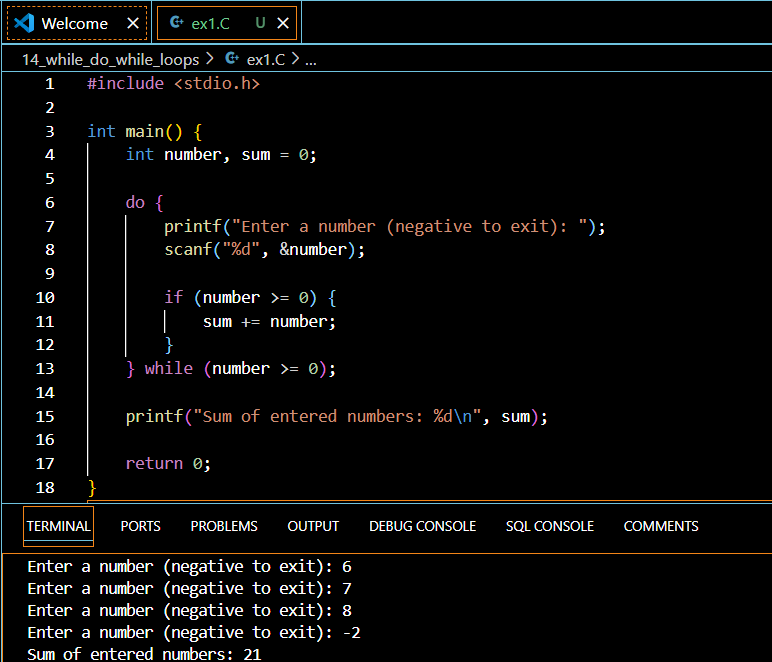

Introduction
Loops are a fundamental concept in programming that allow you to execute a block of code repeatedly until a specified condition is met. In C, two commonly used loop constructs are the while loop and the do while loop. As a beginner C programmer, understanding how to effectively use these loops is crucial for writing efficient and concise code. In this article, we will dive deep into the workings of while and do while loops, explore their syntax, and provide practical examples to solidify your understanding.
What are Loops?
Before we delve into the specifics of while and do while loops, let’s first understand what loops are and why they are important. Loops provide a way to automate repetitive tasks in programming. Instead of manually writing the same code multiple times, you can use a loop to execute a block of code repeatedly based on a certain condition. This not only saves time and effort but also makes your code more readable and maintainable.
The while Loop
The while loop is the simplest looping construct in C. It allows you to repeatedly execute a block of code as long as a specified condition is true. Here’s the general syntax of a while loop:
while (condition) {
// code block to be executed
}The condition is a boolean expression that is evaluated before each iteration of the loop. If the condition is true, the code block inside the loop is executed. This process continues until the condition becomes false.
Here’s a simple example that demonstrates the usage of a while loop:
#include <stdio.h>
int main() {
int count = 0;
while (count < 5) {
printf("Count: %d\n", count);
count++;
}
return 0;
}Output:
Count: 0
Count: 1
Count: 2
Count: 3
Count: 4In this example, the while loop continues to execute as long as the value of count is less than 5. Inside the loop, we print the current value of count and increment it by 1 using the count++ statement. The loop terminates when count reaches 5.
Important Points to Remember
The condition in a
whileloop is checked at the beginning of each iteration. If the condition is false from the start, the loop body will not be executed at all.Make sure to include a statement inside the loop that modifies the condition, otherwise you’ll end up with an infinite loop. In the example above, we increment
countto ensure the loop eventually terminates.Be cautious of off-by-one errors. In the example, the loop runs from 0 to 4 (inclusive), not 1 to 5. Adjust the condition accordingly based on your requirements.
The do while Loop
The do while loop is similar to the while loop, but with one key difference: the condition is checked at the end of each iteration instead of at the beginning. This means that the code block inside the loop is guaranteed to execute at least once, even if the condition is initially false. Here’s the general syntax of a do while loop:
do {
// code block to be executed
} while (condition);Note the semicolon (;) after the while condition. This is required for the do while loop syntax.
Let’s look at an example that demonstrates the usage of a do while loop:
#include <stdio.h>
int main() {
int number;
do {
printf("Enter a number (0 to exit): ");
scanf("%d", &number);
printf("You entered: %d\n", number);
} while (number != 0);
printf("Exiting the loop.\n");
return 0;
}Output (sample run):
Enter a number (0 to exit): 5
You entered: 5
Enter a number (0 to exit): 10
You entered: 10
Enter a number (0 to exit): 0
You entered: 0
Exiting the loop.In this example, the do while loop prompts the user to enter a number and prints the entered number. The loop continues to execute until the user enters 0. Notice that the loop body is executed at least once, even if the user enters 0 right away.
When to Use do while vs while
The choice between using a while loop or a do while loop depends on the specific requirements of your program. Here are some guidelines:
Use a
whileloop when you want to check the condition before executing the loop body. This is useful when the loop may not need to run at all based on the initial condition.Use a
do whileloop when you want to execute the loop body at least once, regardless of the initial condition. This is handy when you need to prompt the user for input or perform some setup tasks before checking the condition.
Your Turn!
Now that you have a solid understanding of while and do while loops, it’s time to put your knowledge into practice. Try solving the following problem:
Write a C program that calculates the sum of numbers entered by the user until the user enters a negative number. Use a do while loop to implement this functionality.
Here’s the solution:
#include <stdio.h>
int main() {
int number, sum = 0;
do {
printf("Enter a number (negative to exit): ");
scanf("%d", &number);
if (number >= 0) {
sum += number;
}
} while (number >= 0);
printf("Sum of entered numbers: %d\n", sum);
return 0;
}
In this solution, we use a do while loop to repeatedly prompt the user for a number. If the entered number is non-negative, we add it to the sum variable. The loop continues until the user enters a negative number. Finally, we print the sum of all the entered numbers.
Quick Takeaways
- Loops allow you to repeatedly execute a block of code based on a condition.
- The
whileloop checks the condition at the beginning of each iteration and executes the loop body if the condition is true. - The
do whileloop executes the loop body first and then checks the condition at the end of each iteration, ensuring that the loop body runs at least once. - Make sure to include a statement inside the loop that modifies the condition to avoid infinite loops.
- Choose between
whileanddo whileloops based on whether you want to check the condition before or after executing the loop body.
Conclusion
Congratulations! You now have a solid understanding of while and do while loops in C. These loops are essential tools in your programming toolkit, allowing you to automate repetitive tasks and create more efficient and readable code. Remember to practice using loops in various scenarios to reinforce your understanding and develop your problem-solving skills.
As you continue your journey as a C programmer, you’ll encounter more advanced looping constructs like the for loop and nested loops. Keep exploring and experimenting with different loop variations to become a proficient C programmer.
FAQs
- What is the main difference between a
whileloop and ado whileloop?- The main difference is that a
whileloop checks the condition before executing the loop body, while ado whileloop executes the loop body first and then checks the condition.
- The main difference is that a
- Can a
whileloop execute zero times?- Yes, if the condition is false from the start, the
whileloop will not execute at all.
- Yes, if the condition is false from the start, the
- Is it necessary to use braces
{}for a single-statement loop body?- While it’s not mandatory, it’s considered good practice to always use braces, even for single-statement loop bodies. It improves readability and reduces the chances of errors when modifying the code later.
- What happens if I forget to include a statement that modifies the loop condition?
- If you forget to include a statement that modifies the loop condition, you’ll end up with an infinite loop. The loop will continue to execute indefinitely, causing your program to hang or crash.
- Can I use a
breakstatement to exit a loop prematurely?- Yes, you can use the
breakstatement to exit a loop prematurely. When encountered, thebreakstatement immediately terminates the loop and transfers control to the next statement after the loop.
- Yes, you can use the
I hope you found this article helpful in understanding while and do while loops in C. If you have any further questions or need clarification on any topic, feel free to ask. Happy coding, and don’t forget to share this article with your fellow C programmers!
References
GeeksforGeeks. (n.d.). C while loop. Retrieved from https://www.geeksforgeeks.org/c-while-loop/
Programiz. (n.d.). C do…while loop. Retrieved from https://www.programiz.com/c-programming/c-do-while-loops
JavaTpoint. (n.d.). While loop in C. Retrieved from https://www.javatpoint.com/while-loop-in-c
These references provide additional information and examples on while and do while loops in C programming. They can serve as valuable resources for beginners looking to deepen their understanding of these essential looping constructs.
Happy Coding! 🚀
You can connect with me at any one of the below:
Telegram Channel here: https://t.me/steveondata
LinkedIn Network here: https://www.linkedin.com/in/spsanderson/
Mastadon Social here: https://mstdn.social/@stevensanderson
RStats Network here: https://rstats.me/@spsanderson
GitHub Network here: https://github.com/spsanderson
Bluesky Network here: https://bsky.app/profile/spsanderson.com